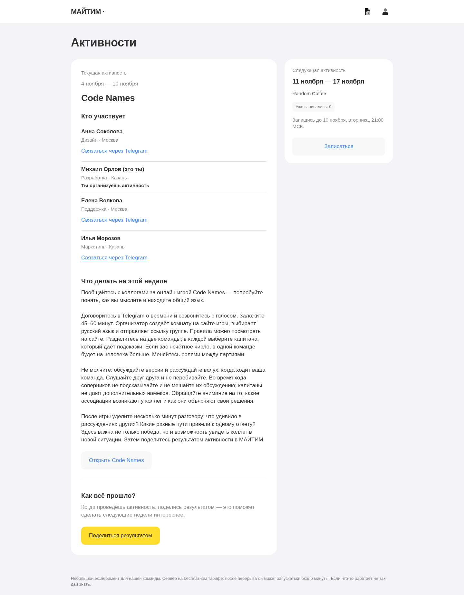
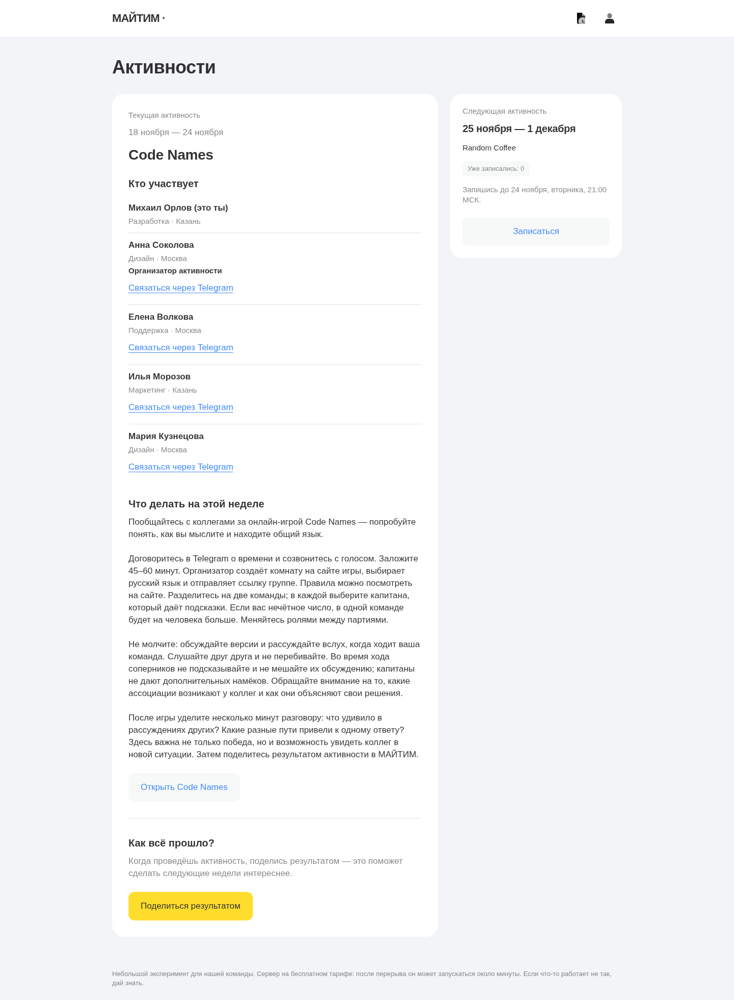
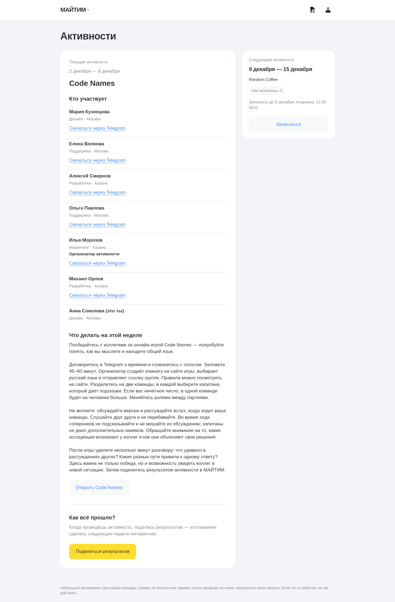
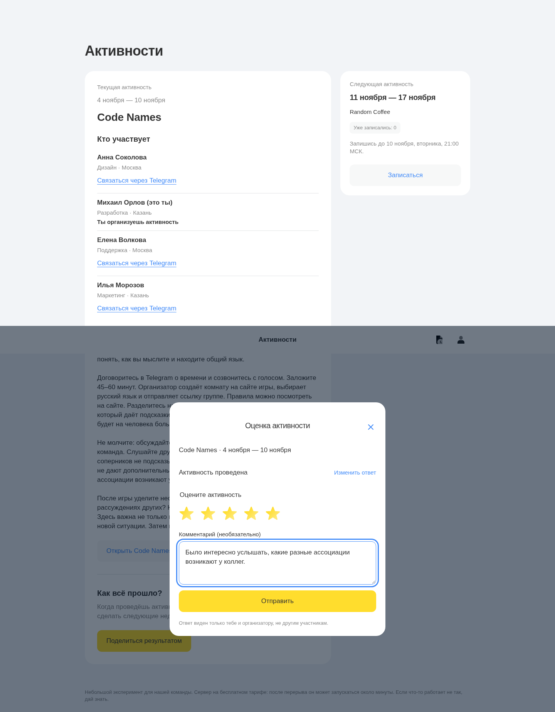
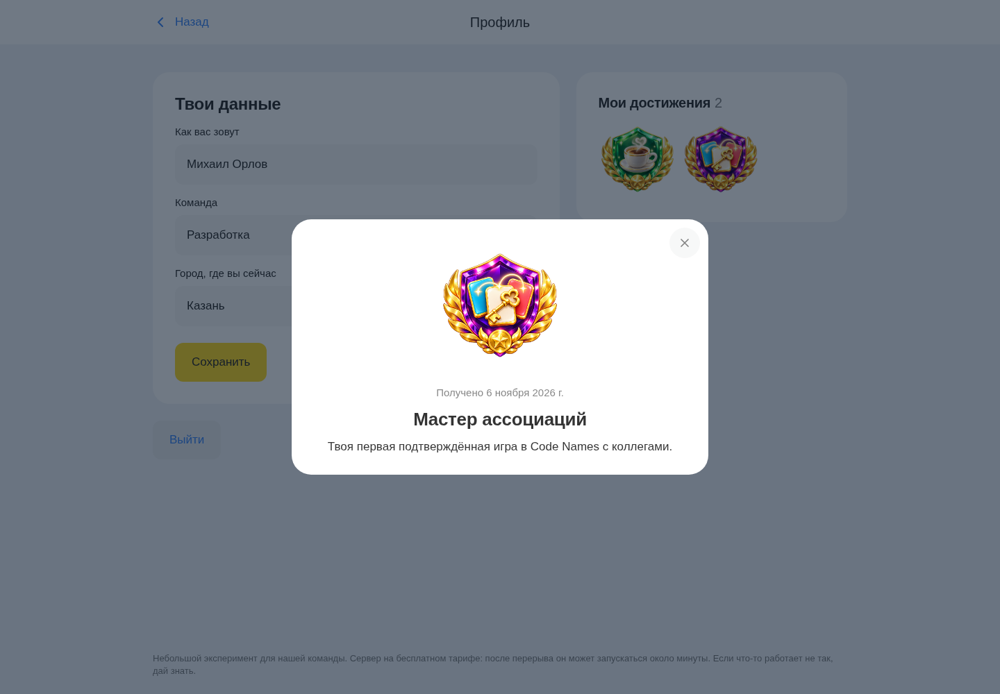

МАЙТИМ · Code Names · 26 октября 2026
Code Names — проверка активности
Пять скриншотов, один размер: desktop 1440×1000. Открой изображение, чтобы посмотреть полностью.
Вымышленные участники, даты и прохождение. Ответы получены через настоящий Django API в отдельной локальной PostgreSQL, затем подставлены в статический клиент. Реальные участники, записи и Telegram не затронуты. Игровая партия и создание комнаты на внешнем сайте не тестировались.
Группы по 4 человека, остаток распределяется до 5. Для 6–7 и 11 записавшихся допустимы 6–7: одна группа 6/7 либо группы 6+5. Менее четырёх — группа не создаётся. Награда «Мастер ассоциаций» выдаётся после первого подтверждённого результата.
Текст описания · Результат проверки · Приложение · Сайт игры

Пять участников · вид участника
Открыть полностью ↗
Семь участников · допустимый остаток
Открыть полностью ↗
Оценка Code Names
Открыть полностью ↗
Мастер ассоциаций · награда за первую игру
Открыть полностью ↗Описание для участников
Code Names
Пообщайтесь с коллегами за онлайн-игрой Code Names — попробуйте понять, как вы мыслите и находите общий язык.
Договоритесь в Telegram о времени и созвонитесь с голосом. Заложите 45–60 минут. Организатор создаёт комнату на сайте игры, выбирает русский язык и отправляет ссылку группе. Правила можно посмотреть на сайте. Разделитесь на две команды; в каждой выберите капитана, который даёт подсказки. Если вас нечётное число, в одной команде будет на человека больше. Меняйтесь ролями между партиями.
Не молчите: обсуждайте версии и рассуждайте вслух, когда ходит ваша команда. Слушайте друг друга и не перебивайте. Во время хода соперников не подсказывайте и не мешайте их обсуждению; капитаны не дают дополнительных намёков. Обращайте внимание на то, какие ассоциации возникают у коллег и как они объясняют свои решения.
После игры уделите несколько минут разговору: что удивило в рассуждениях других? Какие разные пути привели к одному ответу? Здесь важна не только победа, но и возможность увидеть коллег в новой ситуации. Затем поделитесь результатом активности в МАЙТИМ.
Открыть игру: https://codenames.game/
Пример сообщения организатору в Telegram
Имена в настоящем сообщении кликабельны; здесь ссылки заменены пометкой [Telegram]. Под сообщением две кнопки: «Открыть активность» и «Открыть Code Names».
Code Names
Твоя активность на эту неделю!
Участники:
Анна Соколова [Telegram] · Дизайн
Михаил Орлов [Telegram] · Разработка · организатор
Елена Волкова [Telegram] · Поддержка
Илья Морозов [Telegram] · Маркетинг
Ты организуешь игру: предложи группе время, создай ссылку на звонок и комнату Code Names. Пришли обе ссылки участникам. Пообщайтесь с коллегами за онлайн-игрой Code Names — попробуйте понять, как вы мыслите и находите общий язык.
Договоритесь в Telegram о времени и созвонитесь с голосом. Заложите 45–60 минут. Организатор создаёт комнату на сайте игры, выбирает русский язык и отправляет ссылку группе. Правила можно посмотреть на сайте. Разделитесь на две команды; в каждой выберите капитана, который даёт подсказки. Если вас нечётное число, в одной команде будет на человека больше. Меняйтесь ролями между партиями.
Не молчите: обсуждайте версии и рассуждайте вслух, когда ходит ваша команда. Слушайте друг друга и не перебивайте. Во время хода соперников не подсказывайте и не мешайте их обсуждению; капитаны не дают дополнительных намёков. Обращайте внимание на то, какие ассоциации возникают у коллег и как они объясняют свои решения.
После игры уделите несколько минут разговору: что удивило в рассуждениях других? Какие разные пути привели к одному ответу? Здесь важна не только победа, но и возможность увидеть коллег в новой ситуации. Затем поделитесь результатом активности в МАЙТИМ.